<!doctype html><meta charset="utf-8"><style>body{font:14px system-ui;background:#ddd}main{display:grid;grid-template-columns:repeat(4,1fr);gap:8px}article{min-width:0}img{width:100%;height:230px;object-fit:contain}.light{background:#F7F3E8}.dark{background:#183E33}</style><main><article><b>cutouts/bamboo-opening-branch.png</b><div class="light"></div><div class="dark"></div></article><article><b>cutouts/bamboo-shadow-clean.png</b><div class="light"></div><div class="dark"></div></article><article><b>cutouts/bamboo-shadow.png</b><div class="light"></div><div class="dark"></div></article><article><b>cutouts/ceramic-opening-still-life.png</b><div class="light"></div><div class="dark"></div></article><article><b>cutouts/non-la-section-cutout.png</b><div class="light"></div><div class="dark"></div></article><article><b>cutouts/textile-edge.png</b><div class="light"></div><div class="dark"></div></article><article><b>botanical/lotus-botanical-01.png</b><div class="light"></div><div class="dark"></div></article><article><b>botanical/lotus-botanical-02.png</b><div class="light"></div><div class="dark"></div></article></main>